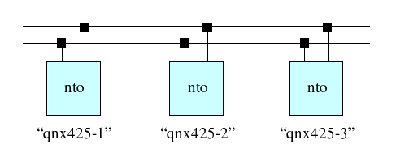

4.8. Сеть Qnet |
4.8. Сеть Qnet |
|  | Send-Receive-Reply |
Все узлы qnet открываются под префиксом /net
ls /net -- просмотр узлов qnet
Все локальные ресурсы узла nodename открываются под префиксом /net/nodename
Имя узла содержится в переменной среды HOSTNAME
on [-d] -f nodename prog [args]
Запуск программы prog на узле nodename. Опция -d означает запуск в открепленном режиме (без ожидания завершения).